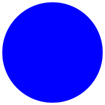
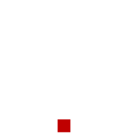
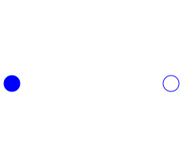

This package contains connectors and interfaces (partial models) for electrical multiphase components, based on Modelica.Electrical.Analog.
| Name | Description |
|---|---|
| Plug with m pins for an electric component | |
|  PositivePlug | Positive plug with m pins |
| Negative plug with m pins | |
|  ConditionalHeatPort | Partial model to include conditional HeatPorts in order to describe the power loss via a thermal network |
|  TwoPlug | Component with one m-phase electric port |
| OnePort | Component with two electrical plugs and currents from plug_p to plug_n |
| Component with two m-phase electric ports | |
| Component with two m-phase electric ports, including currents |